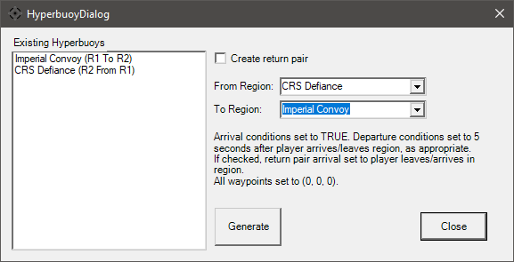

Hyperbuoy Wizard

The Hyperbuoy dialog is used for XWA to make matching buoy pairs easier. The left side initially shows all hyperbuoys that exist upon launch. As buoys are generated, they will also be added to this list. What is shown is the bouy's FlightGroup Name, followed by the region numbers (one-indexed) it's connecting and how (to/from). Hitting 'Generate' will also add the buoys to the craft list in the main window. If the buoy generation would exceed mission craft limits, it will generate an error and no action will be taken.